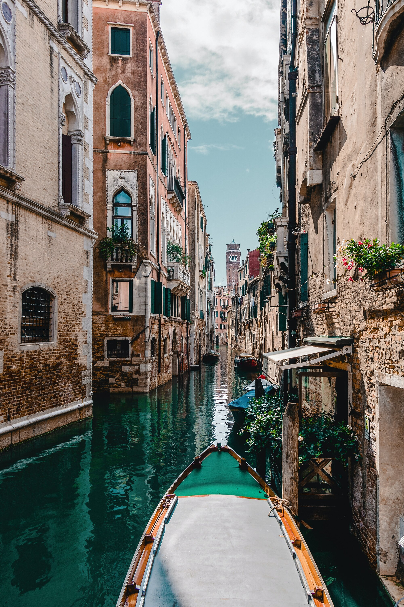
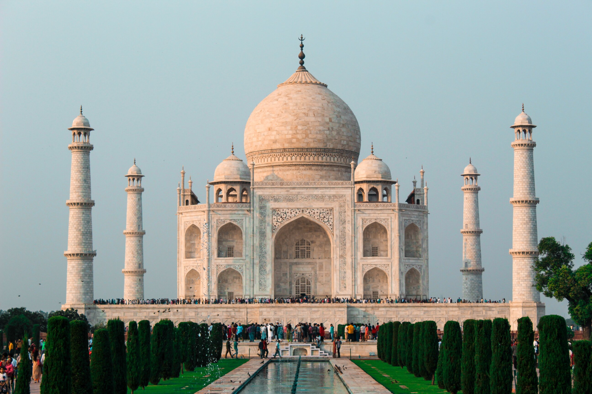

Favorite Places to Visit
Traveler, because we gather all the opinions and information of every traveler of the world we have concluded the most visited places in the world and that are the favorite of the most turist and adventurers:
Venice, Italy.
Venice, is the metropolitan city in Veneto Region in Italy and this city is very popular because of the it attractive Adriatic Sea with a historical legacy, built in an archipelago with other isles around. That's the reason why this city seems to be floating in the see, the streets are the rivers of water and but but the buildings seems that where constructed by the best architectures because its structures never fall down.
Giza, Egipt
This is a city in Egipt near by the river Nilo, to 20 km southeast of the Cairo. It's a popular place because of it's attractive archeology like the piramids, one of the representative is the sphinx Keops in the Giza's plateau.

Taj Mahal, India.
The meaning of this beautiful palace is 'Palace's Crown', this is a monument funeral constructed between 1631 and 1654 in Agra City, Uttar Pradesh (India). The emperor Muslim Shah Jahan, in honor to his favorite spose, Arjumand Banu Begum, known also as Mumtaz Mahal. Taj Mahal is considered the most beautiful palace, its architecture combine elements of Islamic, Persian, India, and even Turkish. The monument has characterized for an special romantic inspiration.
